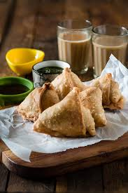

Samosa

Samosas are a popular snack and appetizer in Indian cuisine. They consist of a crispy pastry shell filled with spiced potatoes, peas, and sometimes meat. Samosas can be enjoyed as a savory snack on their own or served with chutney for dipping. They are a favorite among street food vendors and restaurants, both in India and around the world.
Ingredients
For the dough
- 2 cups all-purpose flour
- 1/2 teaspoon salt
- 1/4 teaspoon ajwain seeds (optional)
- 1/3 cup vegetable oil
- 1/2 cup cold water
For the filling
- 2 tablespoons vegetable oil
- 1 teaspoon cumin seeds
- 1 small onion, finely chopped
- 2 garlic cloves, minced
- 1 teaspoon grated fresh ginger
- 1/2 teaspoon ground coriander
- 1/2 teaspoon ground cumin
- 1/2 teaspoon ground turmeric
- 1/2 teaspoon garam masala
- 1/2 teaspoon salt
- 1/4 teaspoon cayenne pepper
- 2 medium potatoes, peeled and diced
- 1/2 cup green peas
- 1/4 cup chopped fresh cilantro
Instructions
- In a large mixing bowl, combine the flour, salt, and ajwain seeds (if using). Add the vegetable oil and mix until the mixture resembles coarse breadcrumbs. Add the cold water, a little at a time, and knead the dough until it becomes smooth and pliable. Cover and set aside.
- Heat the vegetable oil in a large skillet over medium heat. Add the cumin seeds and cook for a few seconds, until fragrant. Add the onion, garlic, and ginger, and cook until the onion is translucent, about 5 minutes.
- Add the coriander, cumin, turmeric, garam masala, salt, and cayenne pepper to the skillet, and cook for another minute. Add the diced potatoes and green peas, and stir to combine. Cover and cook for about 15 minutes, or until the potatoes are tender. Stir in the cilantro and let the mixture cool.
- Preheat the oven to 375°F (190°C). Line a baking sheet with parchment paper.
- Divide the dough into 8 equal pieces and shape each piece into a ball. On a floured surface, roll out each ball into a thin circle, about 6 inches in diameter. Cut each circle in half.
- Take one half of the circle and form it into a cone shape. Fill the cone with the potato mixture, leaving some space at the top. Brush the edges of the cone with water and seal it closed. Repeat with the remaining dough and filling.
- Place the samosas on the prepared baking sheet and brush the tops with vegetable oil. Bake for 25-30 minutes, or until golden brown.
- Serve hot with your favorite chutney for dipping.